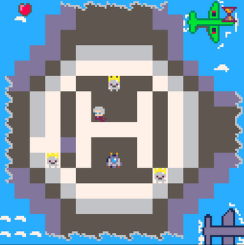
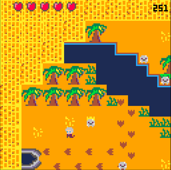
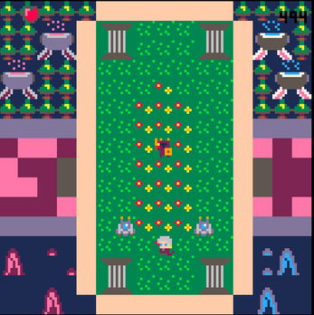
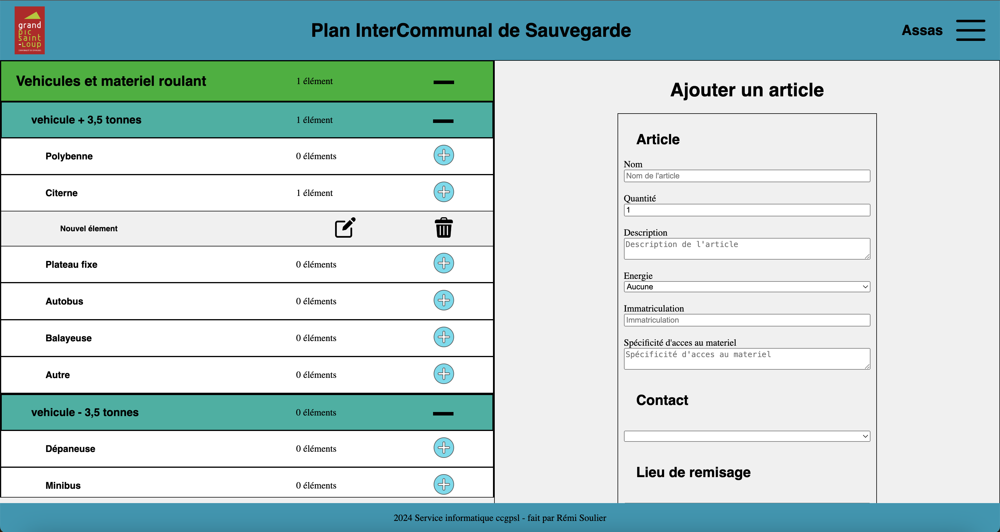
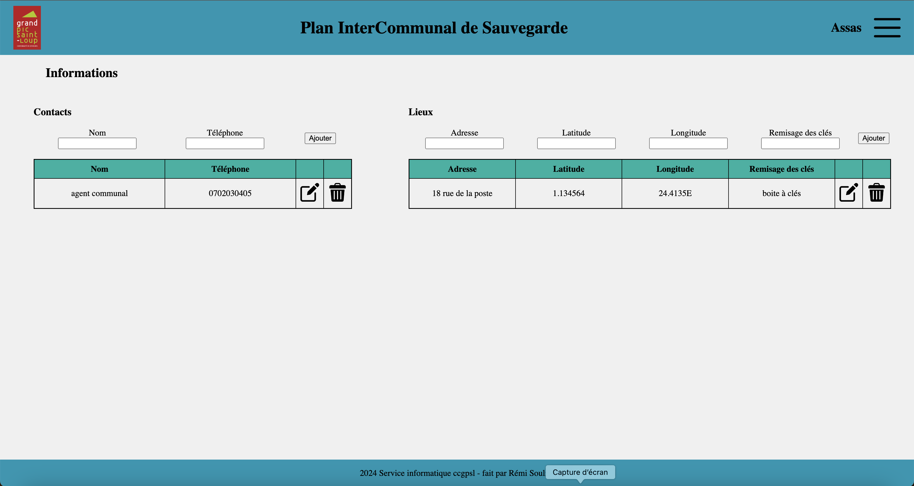
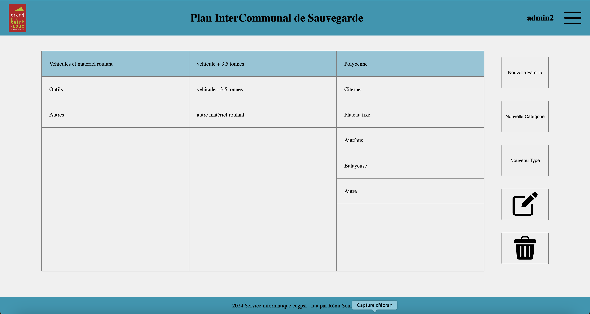
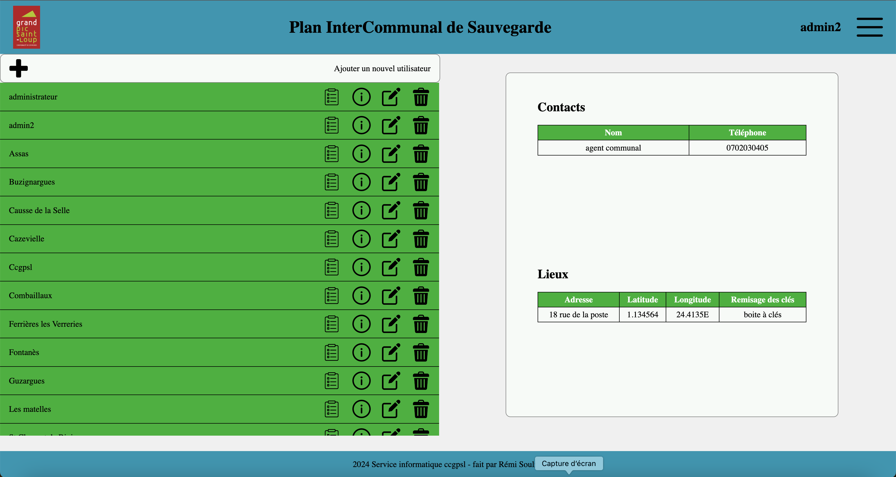
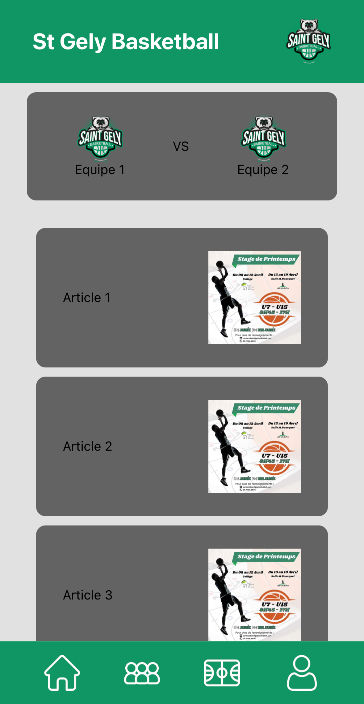
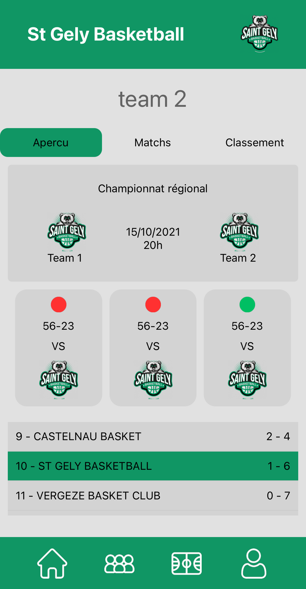
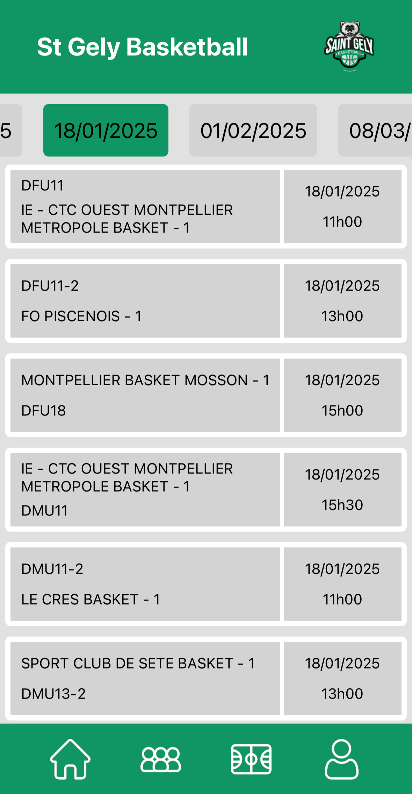

Time Mage Tournament (TMT)
Présentation
Time Mage Tournament est un jeu qui a été développé en seulement 24h dans le cadre de la Code Game Jam 2023 organisée par l'IUT de Montpellier-Sète.
Ce jeu est un jeu de combat en 2D isométrique dans lequel le joueur incarne un mage ayant la capacité d'arrêter le temps et qui doit affronter des monstres dans différentes arènes.
Ce jeu a été développé en Lua avec le moteur de jeu Pico-8.
Compétences du referentiel BTS SIO travailés
-
Travailler en mode projet
- planifier et répartir les tâches
- suivre l’avancement du projet avec un logiciel de versioning
- respecter les délais -
Mettre à disposition des utilisateurs un
service informatique
- réalisation d'un tutoriel pour les joueurs - déployer le jeu sur une plateforme de téléchargement
Images



Plan de Sauvegarde InterCommunal (PICS)
Présentation
Lors de mon stage de BUT2 et de mon alternance de BTS2 au sein de la Communauté de Communes du Grand Pic St Loup, j’ai été amené à concevoir une plateforme à destination des employés de mairies pour élaborer le Plan Intercommunal de Sauvegarde.
Ce plan à pour but d’aider les collectivités territoriales à gérer les différentes crises avec le matériel à disposition des communes.
Pour réaliser cette application, j’ai conçu une base de donnée en fonction des besoins du projet puis développé l’application en PHP et JavaScript en suivant l’architecture MVC.
Compétences du referentiel BTS SIO travailés
-
Travailler en mode projet
- receuillir les besoins du client
- planifier les tâches
- suivre l’avancement du projet avec un logiciel de versioning
- utilisation de methodes agiles (scrum)
- respecter les délais -
Mettre à disposition des utilisateurs un
service informatique
- rédaction d'une documentation pour les utilisateurs
- déploiement de l'application sur un serveur web
Images




Application St Gely Basketball
Présentation
Dans le cadre de mon alternance au sein du St Gely Basketball, j’ai été amené à développer une application mobile pour suivre les actualités et les résultats du club.
Pour mener à bien ma mission, j’ai du apprendre à utiliser le framework react native et ai travaillé avec l’api de la fédération française de basketball pour récupérer les résultats des différentes compétitions
Compétences du referentiel BTS SIO travailés
-
Développer la présence en
ligne de l’organisation
- réalisation d'une application mobile
- utilisation d'une API pour récupérer des données
- communication autour de l'application -
Travailler en mode projet
- receuillir les besoins du client
- planifier les tâches
- suivre l’avancement du projet avec un logiciel de versioning
- utilisation de methodes agiles (scrum)
- respecter les délais -
Mettre à disposition des utilisateurs un
service informatique
- déploiement de l'application sur un store d'application
Images


